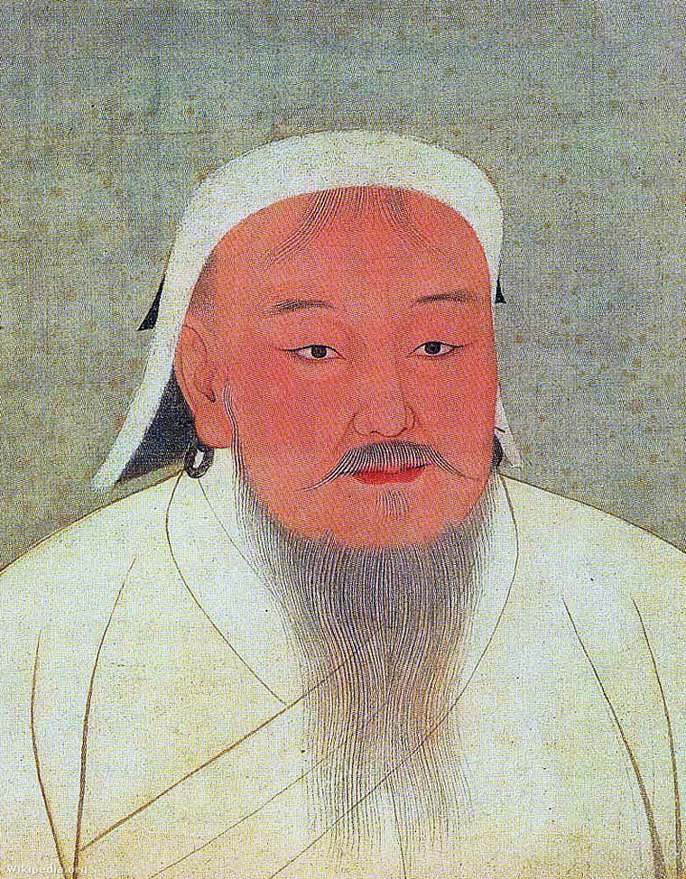
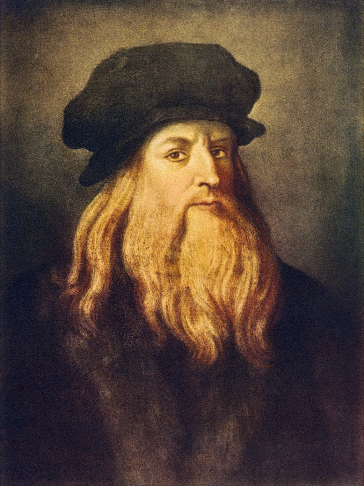

A Római Birodalom szétesése után Európa legnagyobb hatalmává a Frank Birodalom vált, melynek legjelentősebb vezetője Nagy Károly volt. A környéken élő frank népeket először Klodvig egyesítette, mely szövetség tartósnak bizonyult. Klodvig belépett a keresztény egyházba, mellyel elnyerte a pápa támogatását. Az ő utódai voltak a Merovingok, akiknek az uralkodása alatt szétesett a Klodvig által egyesített birodalom, melyet Martell Károly egyesített újra. Nevéhez fűződik a 732-es poitiers-i csata, melynek igen nagy jelentősége van: Megállította az Arab Birodalom előrenyomulását, így egy potenciálisan muszlim felekezetű Európától mentett meg minket. Martell Károly halála után fia, Kis Pippin lett a király (751). Innentől pedig megkezdődött a Karoling-kor, melynek legjelentősebb alakja Kis Pippin fia volt: Nagy Károly.
Nagy Károlynak az elsődleges célja a terjeszkedés volt. Minél nagyobb birodalmat akart utódaira hagyni. Igyekezett a szászokat és a bajorokat letörni elsősorban. Ezen célt az egyház térítő munkával támogatta. Nagy Károly ezt követően a pápa megsegítésére Itáliába ment, hogy leverje a longobárdokat. Ez a hadjárat sikerrel járt, és felszámolta birodalmukat. Legyőzte a Kárpát-Medencében élő avarokat, így Pannóniát az országához csatolta. A Pireneusokon átkelve győzelmet aratott az arabok ellen, ezzel megszerevze a félsziget északi részét. Hatalmas eredményei miatt 800-ban a pápa császárrá koronáztatta
A hódítások 800 után leálltak, melynek társadalmi okai voltak: A szabad harcosok a nagybirtokosok függőségébe kerültek, így nem katonáskodtak, melynek következtében meggyengült Nagy Károly katonai ereje.
A középkorban a hatalom alapja a föld: Önellátás jellemzi az emberi életet, a javakat igyekeznek helyben előállítani. A Frank Birodalomban a függőségben élőktől is csak a természeti javakat lehetett beszedni, a levágott állatokat, beszedett termést helyben kellett elfogyasztani. Nagy Károly birodalma központját Aachenben állította fel. Uralkodása alatt igazságot szolgáltatott, felélte a királyi birtokok készleteit, érzékeltette hatalmát alattvalói körében. Az írásbeli teendők elvégzésére felállíttatta a kancelláriát, ahol írástudó emberekre volt szüksége. Itt fejlesztették ki a Nagy Károly nevéhez fűződő betűtípust: a Karoling-minuszkulát. Ezen teendők mellett Nagy Károly grófságokra osztotta fel a birodalmat, melyeknek élén a gróf állt. A különösen fontos vagy veszélyes helyeken őrgrófságokat alakított ki, melyek élén az őrgróf állt. A grófok és őrgrófok az adott területi egység bevételének az egyharmadát kapták.
Nagy Károly jelenléte a középkorban a magyarság számára különösen fontos, hiszen Szent István király a magyar államszervezet kialakításakor a frankokat vette példaként. Emellett azért is kap kiemelt szerepet Nagy Károly a történelemkönyvekben, mert a középkor első igazán nagy hódítójáról beszélhetünk személyében. Halála után azonban fia, Jámbor Lajos nem tudta össztartani a birodalmat, így az 3 részre szakadt 843-ban, amikor is Nagy Károly unokái (Lothár, Kopasz Károly, Német Lajos) Verdunben felosztották egymás között a birodalmat.
Dzsingisz kán (1162 - 1227)

Dzsingisz kán
Mongol Birodalom
Tisztség: Nagykán
Dzsingisz kán eredetileg Temüdzsin néven látta meg a napvilágot, és egy alacsonyabb rangú mongol vezető, a mintegy 40 család felett parancsoló Jiszügej Baatur fia volt. A világhódító vezér gyermekkorát az előkelő származás ellenére nehéz sorban töltötte, ugyanis apja pár évvel a születése után meghalt, örökségét pedig elorozták a rivális famíliák. Temüdzsin később egy szövetséges törzsfő lányával, Börtével kötött házassága és apja barátai segítségével mégis képes volt visszaszerezni örökségét, majd lassan megindult felfelé a nomád világ kegyetlen ranglétráján.
A sztyeppe zűrzavaros viszonyai közepette nem csak katonai, hanem diplomáciai zsenire is szükség volt ahhoz, hogy a számos nemzetségből egységes horda legyen, ám Temüdzsin mindkét követelménynek megfelelt. Apja híveiből erős szövetséget kovácsolt, segítségükkel legyőzte ellenségeit, később pedig a belső vetélytársakkal is sikeresen elbánt, így 1206-ban a mongolok kagánjává, azaz nagykánná választották. Temüdzsin ekkor vette fel a Dzsingisz nevet, ami feltehetően annyit tesz: tenger népek ura. A nagykán a későbbiekben mindent meg is tett azért, hogy ezt a nevet jogosan viselje.
Dzsingisz kán víziója nyomán született meg a horda legendás fővárosa, Karakorum, ahova a következő évtizedekben, a világ minden tájáról áramlottak a mesés kincsek, miközben a birodalom a meghódított népek tudását is importálta. Később, amikor a Mongol Birodalom már a Selyemútra és az észak-déli irányú „Prémútra” is kiterjesztette hatalmát, Dzsingisz sokat tett annak érdekében is, hogy országa minél jelentősebb kereskedelmi haszonban részesüljön. Neki köszönhető, hogy a birodalom nem csupán ide-oda nyargalászó hordákból állt, bár kétségkívül a mongol terjeszkedés leghangsúlyosabb része a pusztítás és a vérengzés volt.
Dzsingisz, miután egyesítette a mongol törzseket, azt a célt tűzte ki maga elé, hogy a legjelentősebb ázsiai birodalmak között húzódó végtelen sztyeppét is uralma alá hajtsa. Dzsingisz kán aztán az 1213-as esztendőben a Kínai Nagy Fal mögé is betört, feldúlta az északi Jin Birodalmat, és elüldözte az ottani császárt. Emellett Dzsingisz kán kegyetlenül leszámolt a perzsákkal is. Miután a perzsák 1218-ban, Otrar városában lemészárolták egy mongol karavánt, Dzsingisz kán bosszúhadjáratot hirdetett a Közép-Ázsiát uraló sah ellen, két év alatt megsemmisítette az ellenséges birodalmat, és eljutott a Perzsa-öbölig. A nagykán hordái talán a Hvárezm elleni háború során hajtották végre a legszörnyűbb pusztítást, amikor százezres lakosságú városokat romboltak porig, miközben a lakosság nagy részét lemészárolták, a „szerencséseket” pedig a távoli Karakorumba hajtották.
Dzsingisz kán utolsó nyugati hadjárata 1223-ban indult, mely során a rettegett hordák a Kalka-folyó mellett megsemmisítették az orosz és kun fejedelmek egyesült seregeit, és vazallusi sorba taszították a kelet-európai sztyeppe népeit. Az idősödő nagykán utolsó hadjáratát 1226-ban, a fellázadó Hszi Hszia királysága ellen indította meg, életét pedig az ostromolt főváros, Ninhszia alatt fejezte be, 1227. augusztus 18-án. Az Attila hun király példáján jól ismert nomád szokások értelmében, Dzsingisz kánt titokban, ismeretlen helyen temették el, sírját pedig a mai napig nem sikerült megtalálni.
Dzsingisz kán két évtizedes uralkodása alatt létrehozta a földkerekség addigi legnagyobb birodalmát, melynek határai 1227-ben az Uraltól Ázsia keleti partvidékéig, Szibériától az Indiai-óceánig és a Himalájáig húzódtak. A nagykán uralkodása alatt a vérszomjas mongolok teljesen átrajzolták Ázsia arculatát: egész népeket töröltek el a föld színéről, városokat döntöttek romba, és több száz éve virágzó kultúrákat semmisítettek meg.
Leonardo da Vinci (1452 - 1519)

Leonardo da Vinci
Itália
Tisztség: -
Leonardo da Vincit sokszor nevezik a reneszánsz ember őstípusának, akinek végtelen kíváncsisága egyenlő volt a felfedezéseinek. Széles körben az egyik legnagyobb festőnek tartják, és egyes vélemények szerint ő lehetett minden idők legműveltebb embere. Alapfokú iskoláit szülővárosában végezte. 1469-ben Firenzébe utazott, ahol belépett Andrea del Verrocchio szobrász-ötvös-festő műhelyébe gyakornoknak, ami a kor egyik művésziskolája volt. Itt sajátította el a vonalas rajz (tulajdonképpen a vázlatkészítés), a festészet és a szobrászat alapvető technikáit. 1473-ban belép a Szent Lukács-egyesületbe. Erre az évre datálható első, teljes bizonyossággal neki tulajdonítható rajza is, amely az Arno folyó völgyét ábrázolja. Első festménye Verrocchio: Krisztus keresztelése című munkájának angyalfigurája, mely egyesek szerint saját gyermekkori önarcképe és háttere a szülőfaluja tájképe. Az egyre sikeresebb ifjú festőt 1478-ban bízták meg a firenzei Signoria San Bernardo kápolna oltárképének megfestésével.
1482-ben elnyerte Milánóban Ludovico Sforza herceg udvari tudósának és művészének állását. A herceg megbízta apja, Francesco Sforza herceg lovasszobrának megformálásával is, de csak a mű hatalmas agyagmodellje készült el 1493-ban, amelyet aztán a Milánót megszálló francia katonák 1499-ben elpusztítottak. A szobor makettje a Szépművészeti Múzeumban látható.
Az utolsó vacsora című freskója 1498-ban készült el, amit a Santa Maria delle Grazie-kolostor refektóriómában festett. A freskót a téma legtökéletesebb megjelenítéséként méltatták. A mesteri módon felépített jelenetek mellett fontos szerepe van a kompozíciónak, a színhatásnak, a megvilágításnak, az alakok tartásának és mozdulatának, mely harmóniában utal Jézus bibliai szavaira: „Ma közületek egy elárul engem”. Vasari így írt a freskóról: „Mindegyikük arcán látszik a szeretet, a félelem és a felháborodás, illetve a fájdalom, hogy képtelenek kitalálni, mi van Krisztus lelkében”. Leonardo egyéniségként és lélektanilag elemezve ábrázolta az apostolokat. Az áruló Júdást, a gesztusok eszközeivel kirekesztették a közösségből, de ő mégis ellenpontja Jézus méltóságteljes alakjának. Leonardo befejezetlenül hagyta Jézus arcát. Az ötszáz éves falképet igen rossz állapota miatt ma különleges klímaberendezéssel és a látogatások szabályozásával védik.
Leonardót 1482 körül az optika és a vonalperspektíva foglalkoztatta. Ahogy növekedett tudása, egyre több minden érdekelte. 1500 körül a csatornaépítés, a folyószabályozás, az öntözőrendszerek, a víztározók és hidak legkeresettebb szakértőjének számított. Sikerét jelentősen gyarapították a munka termelékenységét növelő, a költségeket csökkentő berendezései. Ilyen volt többek közt a csatornák építéséhez tervezett vízkiemelő szerkezet. 1514-ben alapos tanulmányokat készített a Róma környéki mocsarak kiszárítására, ezekből azonban semmi sem valósult meg.
1506-ban a Milánói Hercegség francia kormányzója Milánóba hívta Leonardót, aki 1507-1508-ban itt festette a Sziklás Madonna egyik változatát és a Szent Anna harmadmagával című alkotást. D’Amboise marsall megrendelésére Leonardo vízvezetékeket és új kormányzói palotát is tervezett. Egyik korai, 1478-1482 között készült táblaképét, a Madonna virággal (Madonna Benois) című művét D’Amboise megvásárolta. Milánóban a művészi emberábrázolás tökéletesítésének szándékával fogott bele a tudományos igényű boncolásba. Látta, hogy az emberi viselkedés hűséges ábrázolásához nélkülözhetetlen annak a belső életnek a teljes ismerete, ami alapvetően meghatározza a külső megjelenést. Az emberi test arányait a Vitruvius-tanulmány munkájában foglalta össze. A boncolások eredményeként az emberi test felépítésének feltárásában is úttörő szerep volt. Élete alkonyán I. Ferenc francia király meghívására az Amboise melletti clouxi kastélyába költözött. Mint a király első festője, mérnöke és építésze, évenként ezer francia aranyból vert pénzérme járadékot kapott. Két év után, megbetegedett és 1519. május 2-án, 67 éves korában meghalt.